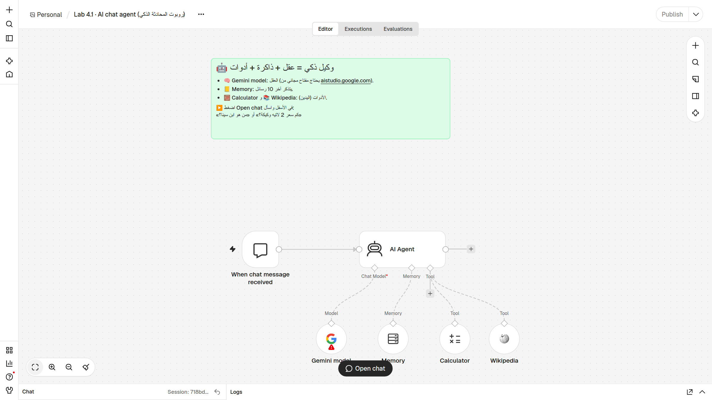
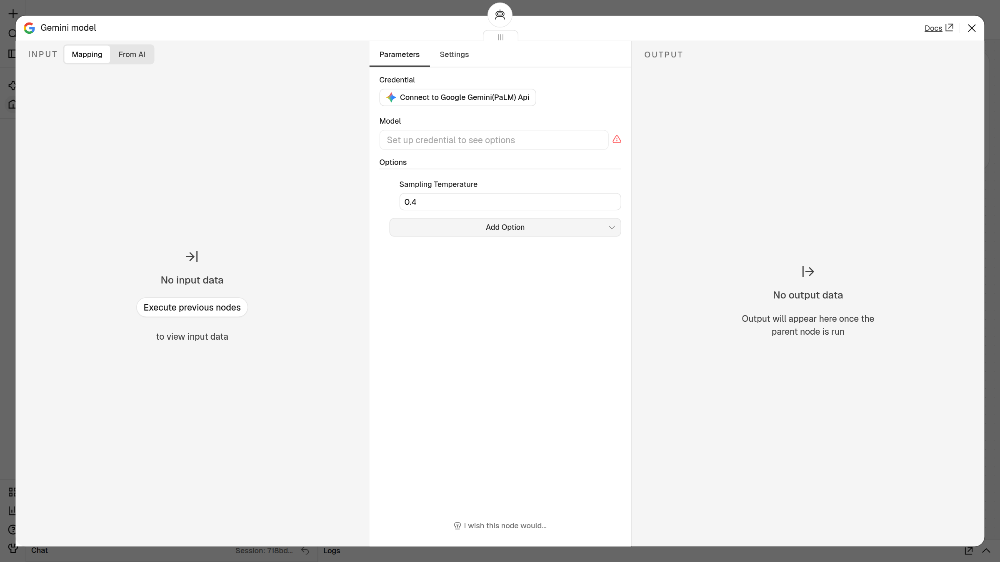
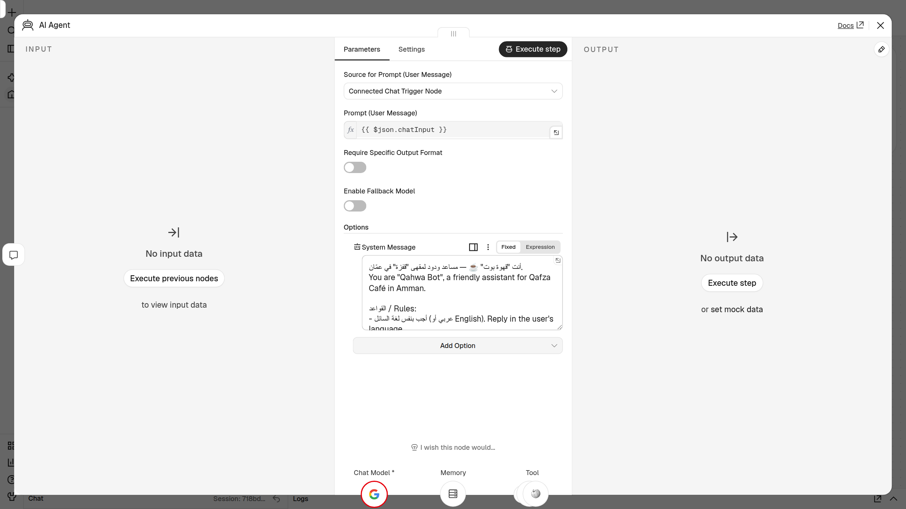
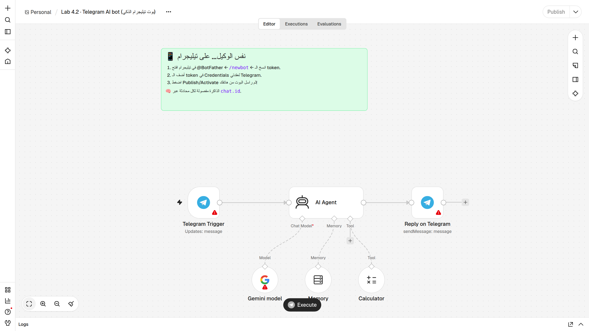
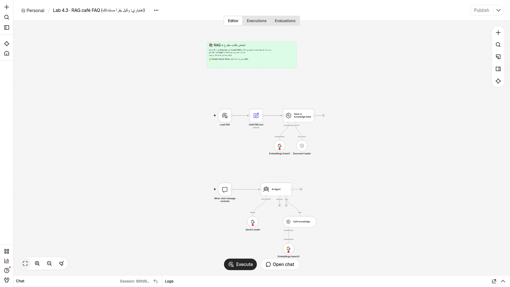

🧪 Lab 4 · ابنِ مساعدك الذكي / Build Your AI Assistant
الحصة 4 · n8n من الصفر — مدة اللاب: حوالي 45–60 دقيقة
⚠️ ملاحظة مهمة: ردود الذكاء الاصطناعي في هذا الملف أمثلة. ردودك ستكون قريبة في المعنى لكن بكلمات مختلفة، وهذا طبيعي. النموذج يكتب الرد من جديد في كل مرة. AI replies below are examples. Yours will have the same meaning, with different words.
🎯 الهدف / Goal
في نهاية هذا اللاب سيكون عندك:
- مفتاح Gemini مجاني (بطاقة العضوية) محفوظ في n8n كـ Credential.
- «قهوة بوت» ☕ يعمل داخل n8n: وكيل ذكي (AI Agent) له شخصية، ويتذكّر اسمك (Memory)، ويحسب بالآلة الحاسبة (Calculator)، ويبحث في الموسوعة (Wikipedia).
- نفس الوكيل على تيليجرام، تراسله من هاتفك.
- (اختياري) وكيل يجيب من مستند الأسئلة الشائعة للمقهى (RAG).
تذكّر المعادلة: الوكيل = عقل (Chat Model) + دفتر ملاحظات (Memory) + يدان (Tools).
✅ قبل أن تبدأ / Before you start
- ☐ حساب n8n Cloud يعمل (التجربة المجانية من الحصة 2)، وتستطيع فتح المحرر.
- ☐ حساب Google تعرف كلمة سرّه (لأخذ مفتاح Gemini).
- ☐ تطبيق Telegram على هاتفك أو حاسوبك، ومسجّل الدخول فيه.
- ☐ ملفات اللاب الثلاثة في مجلد
lab/: chat-agent.json(Lab 4.1)telegram-agent.json(Lab 4.2)rag-faq.json(Lab 4.3، اختياري)
تذكير: كيف تستورد ملف JSON؟ / How to import في محرر سير العمل، بجانب اسم سير العمل (أعلى اليسار) اضغط ⋯ ← Import ▸ From file واختر الملف. أو افتح الملف بأي محرر نصوص، انسخ كل النص، ثم اضغط على اللوحة الفارغة وCtrl+V.
🪜 الخطوات / Steps
🔑 Lab 4.0 — مفتاح Gemini المجاني / Get your free Gemini API key
- افتح الرابط https://aistudio.google.com/apikey في المتصفح. 👀 ترى صفحة Google AI Studio، وقد تطلب منك تسجيل الدخول.
- سجّل الدخول بحساب Google، واقبل الشروط إذا ظهرت لك. 👀 ترى صفحة API Keys.
- اضغط Create API key. إذا سألك عن مشروع (project)، اقبل الخيار الافتراضي أو أنشئ مشروعاً جديداً.
👀 يظهر مفتاح طويل، يبدأ عادةً بالحروف
AIza. - اضغط زر النسخ بجانب المفتاح. 👀 المفتاح الآن في الحافظة (clipboard). لا تلصقه في أي مكان غير n8n.
🔐 المفتاح مثل كلمة السر. من يملكه يستخدم حصّتك. لا ترسله في مجموعة، ولا تصوّره في لقطة شاشة. إذا تسرّب، احذفه من نفس الصفحة وأنشئ مفتاحاً جديداً.
💬 Lab 4.1 — قهوة بوت داخل n8n / Chat agent (chat-agent.json)
أ) الاستيراد وإضافة المفتاح
- في n8n اضغط Create Workflow (أو + ثم Workflow) لفتح سير عمل جديد فارغ. 👀 ترى لوحة فارغة.
- بجانب اسم سير العمل (أعلى اليسار): ⋯ ← Import ▸ From file واختر
chat-agent.json. 👀 تظهر ملاحظة خضراء، وتحتها: When chat message received ← AI Agent، وتحت الوكيل أربع دوائر: Gemini model، Memory، Calculator، Wikipedia. على Gemini model علامة ⚠️ حمراء (المفتاح ناقص).

- انقر مرتين على Gemini model. 👀 تفتح نافذة العقدة، وفيها Credential وModel (فارغ: «Set up credential to see options») وSampling Temperature = 0.4.

- اضغط على حقل Credential واختر Create new credential (أو الزر «Connect to Google Gemini(PaLM) Api»). 👀 تفتح نافذة فيها حقل API Key (وحقل Host اتركه كما هو).
- الصق المفتاح في API Key، ثم اضغط Save. 👀 رسالة خضراء: Connection tested successfully. أغلق نافذة الـ Credential.
- افتح قائمة Model.
👀 تظهر قائمة نماذج. اترك النموذج المختار، أو اختر نموذجاً فيه كلمة flash (مثل
gemini-2.5-flash). إذا ظهر لاحقاً خطأ «model not found» ارجع هنا واختر نموذج flash آخر. - أغلق نافذة العقدة (X أعلى اليمين). 👀 اختفت العلامة الحمراء عن Gemini model.
ب) نظرة داخل الوكيل (لا تغيّر شيئاً)
- انقر مرتين على AI Agent.
👀 Source for Prompt = «Connected Chat Trigger Node»، وPrompt =
{{ $json.chatInput }}، وتحت Options تجد System Message: الوصف الوظيفي لقهوة بوت (الدور، الأسعار، الساعات، القواعد).

- اقرأ رسالة النظام، ثم أغلق النافذة.
ج) جرّب المحادثة: سكربت الاختبار
- اضغط Open chat في أسفل منتصف اللوحة. 👀 تفتح لوحة Chat في الأسفل وفيها خانة لكتابة رسالة.
- اكتب الأسئلة الخمسة التالية بالترتيب، سؤالاً واحداً في كل رسالة، وانتظر الرد بعد كل سؤال:
| # | اكتب / Type | يختبر / Tests | رد متوقّع (مثال) / Example reply |
|---|---|---|---|
| 1 | من أنت؟ |
🎭 الشخصية (System Message) | «أنا قهوة بوت ☕ مساعد مقهى قفزة في عمّان. كيف أساعدك؟» |
| 2 | اسمي ريم ثم في رسالة جديدة: ما اسمي؟ |
📒 الذاكرة (Memory) | «اسمك ريم 😊» |
| 3 | كم سعر 2 لاتيه وكيكة؟ |
🧮 الآلة الحاسبة (Calculator) | «المجموع 8 دنانير ☕» (2 × 2.5 + 3 = 8) |
| 4 | من هو ابن سينا؟ |
📚 ويكيبيديا (Wikipedia) | «طبيب وفيلسوف مسلم شهير، صاحب كتاب القانون في الطب…» |
| 5 | هل عندكم بيتزا؟ |
🤷 «لا أعرف» بدل الاختراع | «لا أعرف / ليست في قائمتنا، يمكنك سؤال الكاشير» |
- بعد السؤال 3، افتح لوحة Logs (أسفل يمين الشاشة). 👀 ترى خطوات الوكيل: نداء Gemini model، ثم Calculator، ثم الرد. هكذا تتأكد أن الوكيل استخدم الأداة ولم يخمّن.
- جرّب سؤالاً بالإنجليزية:
What time do you open?👀 يرد بالإنجليزية (8 AM – 11 PM)، لأن القاعدة تقول: أجب بلغة السائل. - احفظ سير العمل (Ctrl+S) إذا لم يُحفظ تلقائياً.
✅ نجحت في 4.1 إذا مرّت الأسئلة الخمسة كما في الجدول.
📱 Lab 4.2 — نفس الوكيل على تيليجرام / Telegram bot (telegram-agent.json)
أ) أنشئ البوت مع BotFather
- في تيليجرام ابحث عن @BotFather (عليه علامة التوثيق الزرقاء ✔️) واضغط Start. 👀 يرسل لك قائمة بالأوامر.
- أرسل:
/newbot👀 يسألك: How are we going to call it? - اكتب اسماً للبوت، مثل:
Qahwa Bot👀 يطلب username ينتهي بكلمةbot. - اكتب اسم مستخدم فريداً، مثل:
qahwa_reem_bot(إذا كان محجوزاً جرّب اسماً آخر). 👀 رسالة Done! وفيها token طويل بالشكل1234567890:AAH.... - انسخ الـ token. 🔐 الـ token هو مفتاح البوت: من يملكه يتحكّم بالبوت. لا تشاركه.
ب) استورد واربط المفاتيح
- أنشئ سير عمل جديداً، ثم ⋯ ← Import ▸ From file واختر
telegram-agent.json. 👀 ترى: Telegram Trigger ← AI Agent ← Reply on Telegram، وتحت الوكيل: Gemini model وMemory وCalculator. علامات حمراء على عقد تيليجرام وGemini.

- انقر مرتين على Telegram Trigger ← Credential ← Create new credential. 👀 نافذة Telegram API فيها حقل Access Token.
- الصق الـ token ← Save. 👀 رسالة نجاح خضراء. أغلق النوافذ.
- انقر مرتين على Reply on Telegram واختر نفس الـ Credential من القائمة. 👀 اختفت العلامة الحمراء عن العقدتين.
- انقر مرتين على Gemini model واختر مفتاح Gemini الذي أنشأته في 4.1 (لا تحتاج مفتاحاً جديداً). 👀 لا توجد أي علامة حمراء على اللوحة.
ج) انشر وجرّب من هاتفك
- اضغط Publish أعلى يمين الشاشة (في نسخ n8n القديمة: مفتاح Active). 👀 يظهر أن سير العمل منشور (Published). الآن n8n يستمع لرسائل البوت حتى لو أغلقت المتصفح.
- في تيليجرام افتح البوت (من رابط
t.me/اسم_البوتالذي أعطاك إياه BotFather) واضغط Start. 👀 يرد البوت بترحيب (رسالة/startتصل للوكيل كأنها سؤال). - أرسل:
كم سعر 2 لاتيه وكيكة؟👀 بعد ثوانٍ: «المجموع 8 دنانير ☕» (مثال). - اطلب من زميلك أن يراسل بوتك. اكتب أنت
اسمي ريم، ثم يكتب زميلكما اسمي؟👀 البوت لا يعرف اسم زميلك ولا يخلطه باسمك، لأن الذاكرة مفصولة لكل محادثة: Session Key =chat.id. - في n8n افتح تبويب Executions أعلى اللوحة. 👀 كل رسالة وصلت للبوت تظهر كتشغيل (execution) منفصل. انقر واحداً لترى ما حدث.
💡 لماذا Publish ضروري؟ تيليجرام «يطرق جرس الباب» (Webhook) عند كل رسالة، ويحتاج عنواناً عاماً يبدأ بـ
https. n8n Cloud يعطيك هذا العنوان بعد Publish. n8n على جهازك (localhost) لا يعمل مع تيليجرام إلا بأداة tunnel.⚠️ تيليجرام يسمح بـ Telegram Trigger واحد لكل بوت. لا تستخدم نفس البوت في سيرَي عمل منشورين معاً.
📚 Lab 4.3 (اختياري) — وكيل يقرأ الأسئلة الشائعة / RAG FAQ (rag-faq.json)
الفكرة: امتحان بكتاب مفتوح. الوكيل يبحث في مستند المقهى قبل أن يجيب.
- أنشئ سير عمل جديداً واستورد
rag-faq.json. 👀 جزءان: في الأعلى Load FAQ ← Café FAQ text ← Save to knowledge base (وتحته Embeddings (insert) وDocument loader). في الأسفل When chat message received ← AI Agent مع Gemini model وأداة Café knowledge (وتحتها Embeddings (search)).

- اختر مفتاح Gemini في العقد الثلاث: Embeddings (insert) وGemini model وEmbeddings (search). 👀 لا علامات حمراء.
- (للاطلاع) انقر مرتين على Café FAQ text واقرأ النص: الساعات، الأسعار، الواي فاي، الدفع، التوصيل، خصم الطلاب، الموقع.
- اضغط Execute أسفل اللوحة (يشغّل الجزء العلوي من Load FAQ).
👀 علامات ✓ خضراء على Load FAQ وCafé FAQ text وSave to knowledge base. المستند الآن محفوظ في «مخزن المعرفة» باسم
cafe_faq. - اضغط Open chat واسأل:
هل يوجد خصم للطلاب؟👀 مثال: «نعم، خصم 10% للطلاب مع البطاقة الجامعية.» - جرّب أيضاً:
هل تقبلون CliQ؟ثمكم سعر الكرواسون؟ثمهل عندكم بيتزا؟👀 أمثلة: «نعم، نقبل نقداً وبالبطاقة وCliQ» · «1.75 دينار» · «لا أعرف، اسأل الكاشير». - افتح Logs بعد أحد الأسئلة. 👀 ترى أن الوكيل استدعى أداة Café knowledge قبل أن يجيب.
⚠️ Simple Vector Store يعيش في ذاكرة n8n المؤقتة. إذا أُعيد تشغيل n8n يُمسح، فتعيد الخطوة 4. في المشاريع الحقيقية نستخدم مخزناً دائماً (مثل Pinecone أو Supabase أو Qdrant).
🎉 النتيجة المتوقعة / Expected result
- ✅ 4.0: مفتاح Gemini محفوظ في n8n كـ Credential من نوع Google Gemini(PaLM) Api.
- ✅ 4.1: قهوة بوت يجيب بشخصيته، يتذكّر اسمك، يحسب 2 لاتيه وكيكة = 8 دنانير بأداة Calculator، يجيب عن ابن سينا من Wikipedia، ويقول «لا أعرف» عن البيتزا.
- ✅ 4.2: بوت تيليجرام منشور (Published) يرد على رسائلك من الهاتف، ولكل شخص ذاكرة منفصلة.
- ✅ 4.3 (اختياري): وكيل يجيب عن أسئلة المقهى من المستند فقط.
🛠️ إذا واجهت مشكلة / Troubleshooting
| العَرَض / Symptom | السبب المحتمل | الحل / Fix |
|---|---|---|
| Model not found أو «model is not supported» | النموذج الافتراضي غير متاح لمفتاحك (مثلاً نموذج preview) | افتح Gemini model ← Model ← اختر نموذجاً آخر فيه flash (مثل gemini-2.5-flash) |
| 429 أو quota exceeded / Resource exhausted | تجاوزت حد الرسائل المجاني بالدقيقة أو باليوم | انتظر دقيقة وأعد المحاولة. إذا استمر: الحد اليومي انتهى؛ جرّب غداً أو استخدم مفتاحاً من حساب Google آخر |
| خطأ في الـ Credential / API key not valid | المفتاح منسوخ ناقصاً أو فيه مسافة | انسخ المفتاح من جديد من aistudio والصقه، ثم Save |
| بوت تيليجرام صامت 🤐 | لم تضغط Publish / الـ token خطأ / n8n محلي بدون رابط HTTPS | تأكد من Publish · أعد لصق الـ token في عقدتي تيليجرام · استخدم n8n Cloud (أو tunnel للنسخة المحلية) |
| البوت كان يعمل ثم توقف بعد أن ضغطت Execute في المحرر | تيليجرام يقبل عنوان webhook واحداً لكل بوت؛ التجربة غيّرته | اضغط Unpublish ثم Publish مرة أخرى |
| البوت يرد بخطأ عند إرسال صورة أو ملصق | لا يوجد نص في message.text |
أرسل رسائل نصية فقط في هذا اللاب |
| الوكيل ينسى اسمك 🫥 | عقدة Memory غير موصولة بفتحة Memory تحت الوكيل | اسحب خطاً من Memory إلى فتحة Memory أسفل AI Agent |
| يخترع أسعاراً 🎭 | رسالة النظام ليست صارمة بما يكفي | أضف: «استخدم الأسعار المذكورة هنا فقط. إذا لم تجد السعر قل: لا أعرف.» وخفّض Temperature إلى 0.2 |
| لا يستخدم الآلة الحاسبة | الوكيل قرّر أن يحسب «من رأسه» | أكّد في رسالة النظام: «استخدم أداة Calculator لأي حساب»، وتأكد أن Calculator موصولة بفتحة Tool |
| 4.3: «لا أعرف» عن كل شيء | لم تشغّل Load FAQ، أو أُعيد تشغيل n8n فمُسح المخزن | اضغط Execute مرة أخرى لتحميل المستند، ثم أعد السؤال |
💡 قاعدة عامة: افتح Logs أو تبويب Executions واقرأ الرسالة الحمراء. غالباً تخبرك بالحل.
🚀 تحدّي / Challenges
- ⭐ اجعله لك / Make it yours: افتح AI Agent ← System Message وغيّر الشخصية لمشروعك أنت (مخبز، عيادة، مركز تدريب، متجر ملابس…). غيّر: الاسم والدور، الساعات، 3 أسعار حقيقية، وقاعدة «لا تخترع». ثم أعد سكربت الاختبار بأسئلة تناسب مشروعك.
- ⭐ مقبض الإبداع / Temperature: في Gemini model غيّر Sampling Temperature إلى
0ثم إلى1، واسأل في كل مرة: «اكتب لي جملة ترحيب للزبائن» ثلاث مرات. ماذا لاحظت؟ (عند 0 الردود متشابهة، عند 1 متنوعة أكثر). - ⭐⭐ خصم الطلاب / Student discount: أضف إلى رسالة النظام: «خصم 10% للطلاب.» ثم اسأل: «أنا طالب، كم سعر 2 لاتيه؟» يجب أن يستخدم Calculator: 2 × 2.5 × 0.9 = 4.5 دينار. افتح Logs وتأكد.
- ⭐⭐⭐ شاركه مع العالم / Share it: في عقدة When chat message received فعّل Make Chat Publicly Available، واكتب رسالة ترحيب في Initial Message(s)، ثم Publish. انسخ رابط المحادثة وجرّبه من هاتفك. ⚠️ أي شخص معه الرابط يستهلك من حصّتك المجانية، فشاركه فقط مع من تثق بهم، وأوقفه (Unpublish) بعد التجربة.